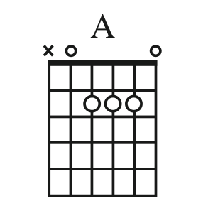

O que é música?
Não apenas uma sobreposição de frequências
Afinal, o que define o limiar entre uma peça musical e ruído?
Começar Marcar como lidoNotas musicais e intervalos
Por que o piano tem teclas brancas e teclas pretas?
Aqui, você entenderá como notas musicais se relacionam.
Começar Marcar como lido

Acordes e tensões
Intervalos compostos
Quando dois ou mais intervalos são "empilhados", criam-se acordes e tensões - indispensáveis em composições.
Começar Marcar como lido